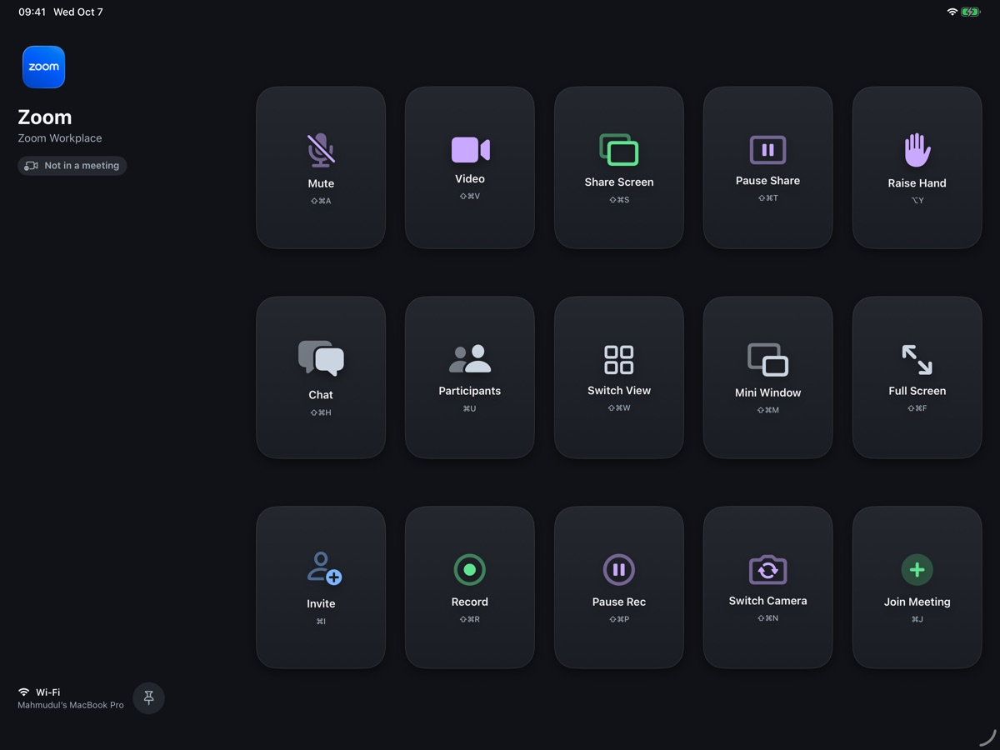
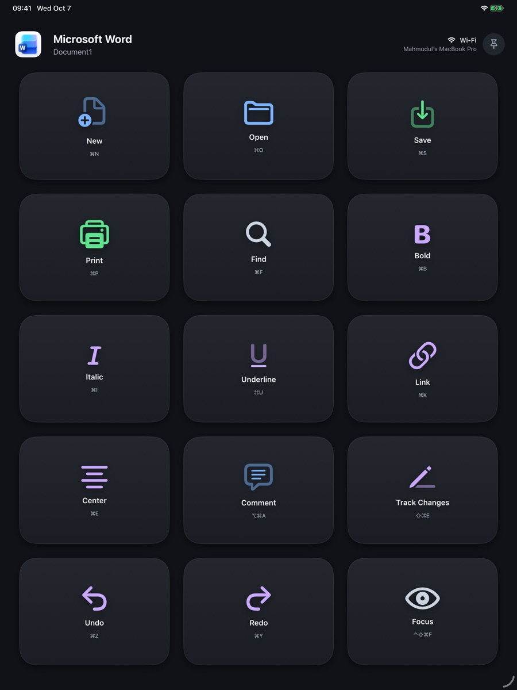
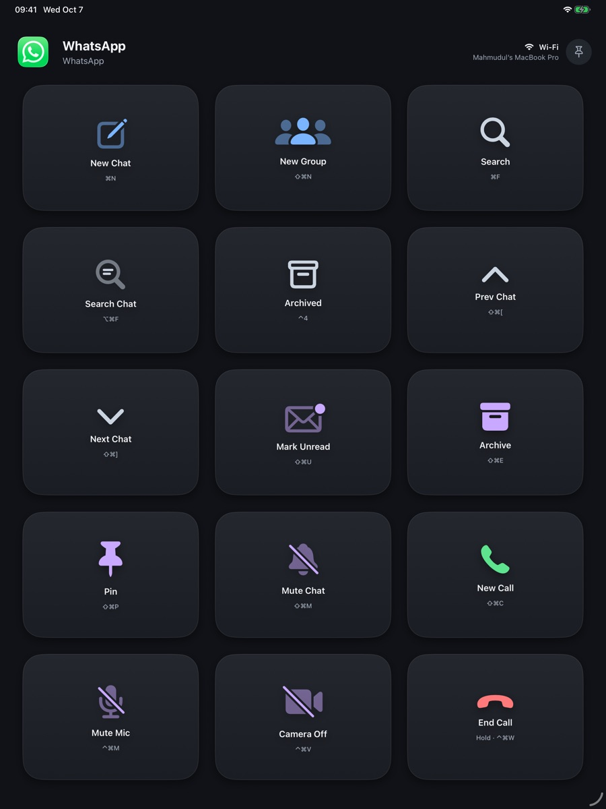
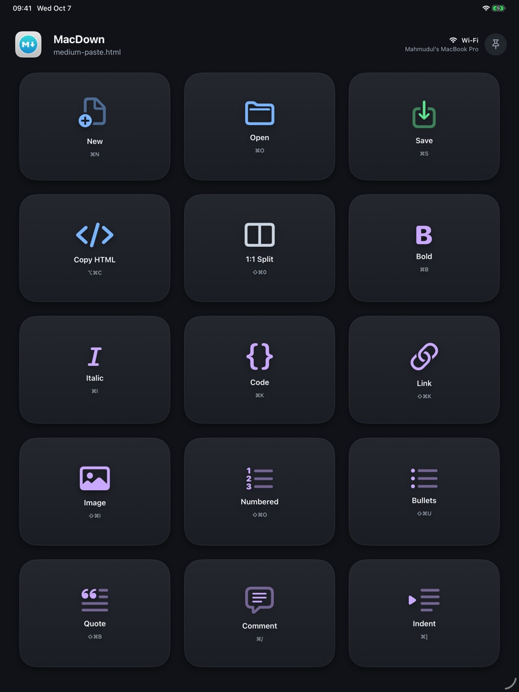
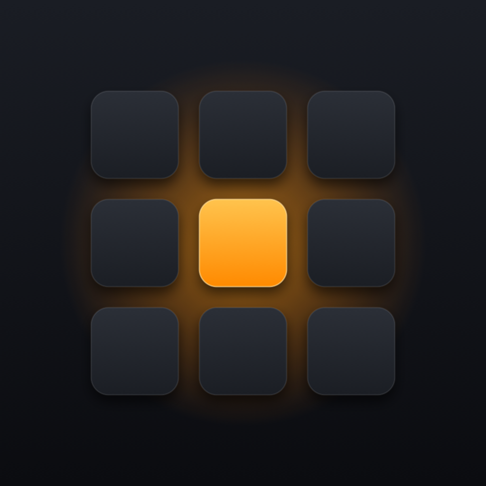

Sidekey turns an iPad or iPhone into a free shortcut deck for your Mac. Whenever you switch apps on the Mac, the deck shows keys for that app, and tapping a key runs the shortcut on the Mac. It even reaches into Citrix sessions, sending Windows shortcuts to a remote work desktop.
Fact sheet
| Name | Sidekey |
|---|---|
| Developer | Mahmudul Hoque, independent developer |
| Platforms | iPad (iPadOS 16 or later) or iPhone (iOS 16 or later), with a Mac (macOS 13 or later) |
| Price | Free. No accounts, ads, subscriptions or in-app purchases. |
| Source code | Open source under the MIT licence: github.com/hoquem/sidekey |
| Mac app | Latest version 1.3.0, a free download from GitHub Releases, signed with Developer ID and notarized by Apple |
| iPad and iPhone app | One app for both, in a private TestFlight beta; it will come to the App Store |
| Website | hoquem.github.io/sidekey |
| Contact | m.hoque@gmail.com |
Works with Citrix
Many people spend their working day in a Citrix session: a Windows desktop streamed to their Mac. Sidekey sends real Windows shortcuts into that session, from Ctrl+Alt+Del to unlock it, to Win+E for File Explorer and Alt+F4 to close an app.
Sidekey cannot see which Windows app is in front inside the session, so you pick a mode from the bottom row of keys: Windows, Outlook, Browser, VS Code, or More for Word, Excel and Teams. Each mode has its own keys, such as Reply All and Mark Read in Outlook, or Mute and Raise Hand in Teams, and Sidekey remembers your mode when you switch away and back.
It works with Citrix Viewer, the window of Citrix Workspace on the Mac. It needs four Citrix keyboard settings (listed on the support page) and app build 5 or later on the iPad or iPhone. Shortcuts come from Microsoft's published lists, and some keys have not been tried in a live session yet.
Short description
Sidekey turns an iPad or iPhone into a free shortcut deck for your Mac. The keys change with the app in front: Run and Build in Xcode, Mute and Share Screen in Zoom, Accept All in Cursor. It ships with ready-made layouts for 30 popular apps, so there is nothing to set up.
Long description
Prop an iPad or iPhone beside your keyboard and it becomes a set of keys for whatever you are doing on your Mac. Switch to Xcode and it shows Run, Build and Test; switch to Zoom and it shows Mute, Video and Share Screen; switch to Cursor and it shows Accept All, Reject All and the model picker. Tap a key and the Mac runs the shortcut.
Sidekey comes with layouts for 30 apps out of the box, from Safari, Mail and Microsoft Office to Slack, Spotify, ChatGPT and AI coding tools. It also works inside Citrix sessions to remote Windows desktops, with modes for Windows, Outlook, Word, Excel, Teams, the browser and VS Code; this needs the Citrix keyboard settings described on the support page. Every tap gets an answer: the key lights up when the shortcut was sent, or shakes with the Mac's reason when it could not be.
Sidekey is free and open source. It has no accounts and no analytics, and the iPad or iPhone talks only to your Mac, over USB or your local network.
Highlights
- No setup. Layouts for 30 apps are built in, with shortcuts taken from each app's own menus or published documentation. Not every key has been tried in its app yet.
- It follows the Mac. The keys change with the app in front, and the top of the deck shows which app and window you are driving and whether the link is USB or Wi-Fi.
- Honest feedback. A key glows while the Mac works, lights when the shortcut was sent, and shakes with the reason when it was not, for example a missing permission.
- Remote Windows desktops. In a Citrix session Sidekey sends Windows shortcuts such as Ctrl+Alt+Del, Win+E and Alt+F4 into the session. This needs app build 5 or later and specific Citrix keyboard settings, and some of its keys have not been tried in a live session yet.
- Free and open. MIT-licensed source on GitHub, no accounts, no tracking.
Built-in layouts
Safari, Chrome, Arc, Finder, Mail, Messages, Notes, Calendar, Music, Photos, Microsoft Word, Excel, PowerPoint, Outlook and Teams, Slack, Zoom, WhatsApp, Telegram, Spotify, Notion, ChatGPT, Xcode, VS Code, Cursor, Antigravity, OpenCode, Terminal, MacDown and Citrix Viewer, plus system keys such as Play/Pause, Screenshot and Lock Mac for every other app.
Privacy and security
- Pairing. An iPad or iPhone can see or control a Mac only after you pair them with a 6-digit code shown on the Mac.
- Built-in actions only. A tap names a key, and the Mac runs that key's action from its own layout. It never runs an action sent over the network.
- Not encrypted yet. Traffic between the iPad or iPhone and the Mac is not encrypted yet; the support page explains the risk and recommends USB or a trusted network. Encryption is planned.
- An earlier version was withdrawn. Mac 1.0.0 accepted connections from any device that could reach the Mac over the network and ran the actions that device sent, including shell commands. It was withdrawn on 7 October 2026 and replaced the same day by 1.1.0, which added pairing and runs only the Mac's own built-in actions.
Details: privacy policy and support.
Screenshots
13-inch iPad screenshots, free to use when writing about Sidekey. Select one for the full-size PNG.

Zoom, landscape (2752 × 2064)
Word, portrait (2064 × 2752)
WhatsApp, portrait (2064 × 2752)
MacDown, portrait (2064 × 2752)


App icon

Download the icon (PNG, 1024 × 1024)
Contact
For questions, interviews or a TestFlight invitation for the iPad and iPhone app, email m.hoque@gmail.com.